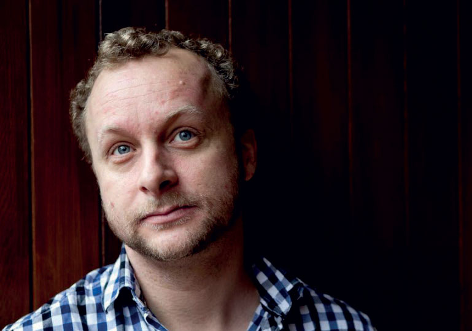
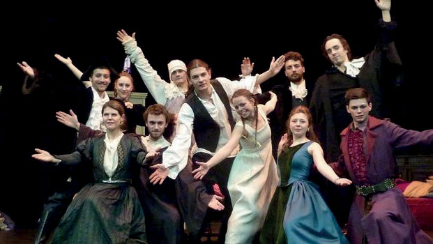
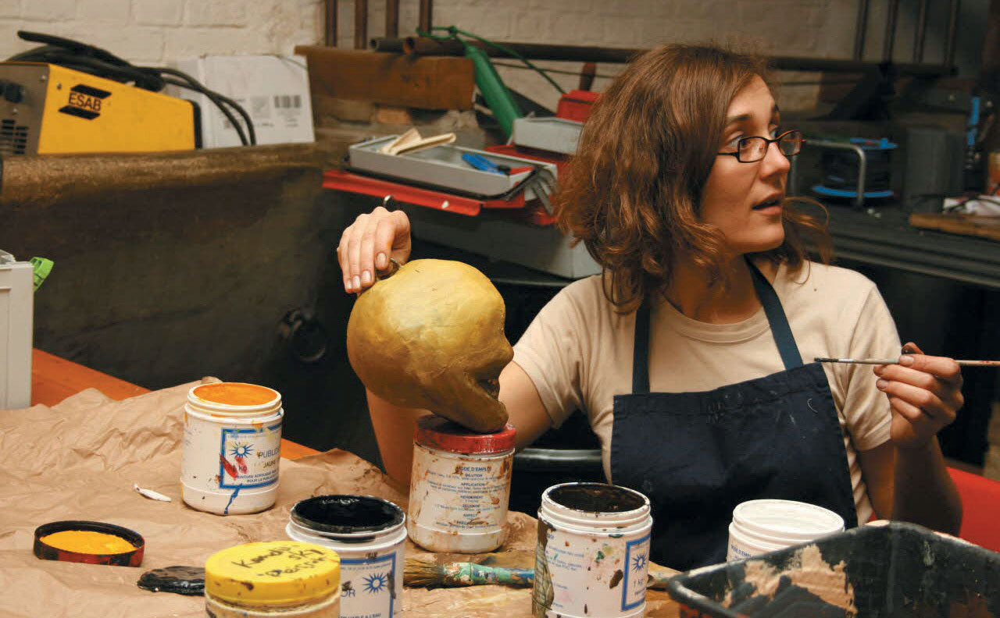

Notre histoire
Dominique Lagrange, Pauline Kérivel et
Richard Langeleux ont créés la Troupe
Imaginaire en 2004.
Les premiers pas
Elle est le fruit de la rencontre entre un
dramaturge et comédien Dominique
Lagrange, une metteur en scène Pauline
Kérivel et un comédien Richard Langeleux.
Richard Langeleux a suivi les cours
Simon à Paris pendant 8 ans et a fait la
connaissance de Dominique lors d’un
tournage d’un court métrage. C’est lors
d’une rencontre dans un café-théâtre que
Pauline se joigna à Dominique et Richard.

L'évolution de La troupe imaginaire
Depuis 2004, ils ont fait grandir la
troupe au nombre de 12 comédiens et 6
professionnels de la lumière, du son, des
décors, du maquillage, des costumes et
de la mise en scène. Ils produisent chaque
année des chefs d’oeuvre français.
Notre équipe
Découvrez l'équipe qui se cache derrière le rideau.
Metteur en scène & dramaturge
Pauline Kérivel : metteur en scène
Avant de rencontrer Dominique
Lagrange et Richard Langeleux, Pauline
a étudié au Conservatoire Nationale
d’Arts Dramatiques où elle a pu
apprendre les rudiments du métiers de
metteur en scène pendant 5 ans.
Elle a fait grandir sa passion grâce
à divers projets. Elle a monté 2
compagnies de théâtre et mis en
scène 8 pièces dont 5 huis clos avant
de s’associer à Dominique et Richard
pour fonder la Troupe Imaginaire.
Dominique Lagrange : dramaturge
Dominique Lagrange met à contribution
son savoir-faire d’adaptation depuis
1998. Il a commencé sa carrière en tant
que dramaturge pour la compagnie
Boutentrain avec laquelle il a travaillé
pendant 6 ans. Sa carrière pris un
tournant lorsqu’il rencontra le metteur
en scène Luck Masson, lors d’une
avant-première. Ce dernier l’invita à
collaborer sur l’adaptation théâtrale
de Forrest Gump. La pièce connue un
réel succés.
Comédiens
Roberto Carbonel
Léon Leroy
Julien Carelle
Benjamin François
Dominique Lagrange
Simon Bélanger
Karine Peletier
Marie Froissard
Alcides de Saxe
Robin Dubois
Richard Langeleux
Maxime Vaugeois


Equipe technique et artistique
Stéphanie Grillon : scénographie
Issue de l’Ecole Nationale Supérieure
d’Architecture de Nantes, Stéphanie
Grillon a rejoint la Troupe Imaginaire
en 2007.
Michel Petit : éclairage
Michel Petit a étudié à l’École Nationale
Supérieure Louis-Lumière et à intégrer
la Troupe en 2014.
Oliver Weiss : ambiance sonore
Oliver Weiss est la plus jeune recrue de
la Troupe Imaginaire. Agé de 19 ans, il a
su faire ses preuves auprès de Pauline
Kérivel et Dominique Lagrange.
Nicolas Viard : costumes
Après avoir reçu son diplôme de
l’Ecole Supérieure de Mode à Paris,
Nicolas Viard se dirigea vers le métier
de costumier.
Laure Lepage : maquillage
Laure Lepage, éditrice de formation,
s’est reconvertie en 2008 pour intégrer
la Troupe Imaginaire en 2010. Après les
six grands spectacles sur lesquels elle
a travailler, Laure ne regrette toujours
pas ce changement de carrière.